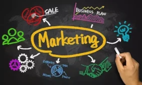

Marketing
- O que é marketing?
O marketing é uma parte essencial de qualquer negócio, e compreender o que é e como funciona é a chave para o sucesso. Embora seja uma palavra de origem inglesa, o conceito já se encontra difundido por todo o mundo. Se olharmos para a sua etimologia, "market" significa mercado e,"marketing" é a técnica de vendas utilizada no mercado. No seu sentido mais básico, marketing é o estudo das necessidades e desejos de um mercado-alvo e a criação de produtos ou serviços que ofereçam valor para satisfazer essas necessidades.
 Marketing é um processo contínuo de pesquisa, avaliação e comunicação entre as empresas e os consumidores. Em sua essência, o marketing busca compreender os clientes a fim de criar relações duradouras, fornecendo-lhes valor através de produtos ou serviços que os mesmos irão adquirir repetidas vezes.
Quais são os objetivos do marketing?
Os principais objetivos do marketing são: educar o mercado sobre seu produto e soluções, gerir e melhorar sua imagem, fidelizar os clientes e criar um relacionamento com eles, e consequentemente, aumentar a visibilidade da marca, dos seus produtos e serviços e vender mais.
Como é que o marketing se transformou?
Nos últimos anos, o marketing tem sofrido uma transformação significativa. A tecnologia tem impulsionado o marketing digital, ajudando as marcas a alcançar um público ainda mais vasto. O marketing tradicional dependia das mídias impressas, dos anúncios televisivos e do rádio, enquanto que agora existe uma gama de novas ferramentas e plataformas digitais para alcançar audiências. Estas ferramentas incluem websites, meios de comunicação social, conteúdos de vídeo, plataformas de marketing e muito mais. Estas novas tecnologias permitem às marcas interagir com novas audiências e fornecer conteúdos relevantes e envolventes. Isto mudou a forma como as marcas se comunicam com os consumidores, o que tornou o marketing mais eficaz.